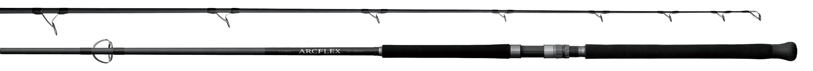

ラグゼ アークフレックスRS
（LUXXE ARCFLEX RS）
ラグゼ アークフレックスRS（LUXXE ARCFLEX RS）はがまかつ（LUXXE）のロックショアロッドです。
限界領域で繰り広げられる磯での釣りを想定して、ARCFLEXシリーズのブランクに求めた最重要課題は「無理の利く強い粘り」「踏ん張る力」、すなわち強靭性です。TORAYCA T1100Gを縦繊維だけでなく横繊維にも採用し、軽量化・強度・反発力／復元力を高めた、「軽く、強く、しなる」ロックショアロッドです。

画像出典:がまかつ公式HP
スペック
- メーカー
- がまかつ（LUXXE）
- タイプ
- スピニング（2ピース・印籠継）
- ラインナップ
- S100H・S100XH・S98XH+・S106XH+・S96XXHの5機種
- 全長
- 290〜320cm（9ft6in〜10ft6in）
- 自重
- 307〜350g
- ブランク
- TORAYCA T1100G（縦・横繊維）
- ガイド
- 富士工業製チタンフレームSiC-Sリングガイド（全機種）
- リールシート
- 富士工業製DPS20（アップロック）
- 価格
- 117,500円〜126,000円（税別）
▼今すぐチェック

ラグゼ アークフレックスRSの特徴
魚を早く浮かせる復元力と、曲げ込んでいける強さ
-
横繊維にもT1100Gを採用したブランク
世界最高クラスの引張強度を持つTORAYCA T1100Gを、縦繊維だけでなく円環方向（横繊維）にも使用。強度・反発力・復元力の向上と軽量化を両立している。
-
がま磯のテイストを落とし込んだ曲がり
「強すぎる反発力を抑えつつ、復元力を高める」をテーマに開発。大型魚の挙動に対する安定性を示し、絞り込むほどにみなぎる復元力でターゲットを浮かせる。
-
トラブルを抑えるガイドセッティング
全機種に富士工業製チタンフレームSiC-Sリングガイドを採用。重いルアーを使う釣りで起きやすいライントラブルを考え、モデルごとに最適なガイドセッティングを施している。
ラグゼ アークフレックスRSの選び方
S100H・S100XHはジグ・プラグに幅広く対応するスタンダードモデル、S98XH+はヘビーウエイトのジグや引き抵抗の大きなプラグ向けのパワープラスモデル、S106XH+・S96XXHは大型のヒラマサやGTに対応する大型プラグ向けモデルです。
使うルアーの重さと、狙う魚のサイズ・ラインの太さから選びましょう。
ラグゼ アークフレックスRSの向いている釣り
磯からのヒラマサ・カンパチ・ブリなどの大型青物、さらにGTやキハダマグロまで狙うロックショアゲームに向いています。
瀬際でロッドを立てたやり取りにも耐える強度を備え、ロッドを立てすぎずバットで負荷を受ける角度を保てば、ブランクの復元力を引き出してファイトタイムを短くできます。
ワンポイント
テスターの松本太郎氏は「2年間で70本以上のヒラマサやカンパチ、キハダをプロトで釣った」「体感的には魚が1.5倍早く浮いてくれる」とコメントしています。ヒラスズキ専用の「アークフレックスBF」もシリーズに加わっています。
モデルの使い分け
| モデル | 全長・自重 | ルアー・ライン・価格（税別） |
|---|---|---|
| S100H | 305cm・307g | プラグ45〜100g・ジグ30〜120g・PE3〜5号・117,500円 |
| S100XH | 305cm・314g | プラグ60〜120g・ジグ45〜150g・PE4〜6号・117,500円 |
| S98XH+ | 295cm・337g | プラグ75〜150g・ジグ60〜180g・PE4〜6号・126,000円 |
| S106XH+ | 320cm・350g | プラグ60〜150g・ジグ60〜180g・PE4〜6号・126,000円 |
| S96XXH | 290cm・338g | プラグ75〜200g・ジグ80〜250g・PE5〜8号・126,000円 |
※数値は公式ページより。最大ドラグ値はS100Hが7kg、S100XHが8kg、S98XH+・S106XH+が10kg、S96XXHが12kg（45°）です。
ラグゼ アークフレックスRSとあわせてチェックしたいアイテム
-
 ラピード F190
マリア
詳細はこちら＞
ラピード F190
マリア
詳細はこちら＞
S100H・S100XHで扱いやすいマリアのダイビングペンシル。
-
 レガート F190
マリア
詳細はこちら＞
レガート F190
マリア
詳細はこちら＞
高速リトリーブ対応のペンシル。ヒラマサのキャスティングに。
-
 フィードダイビングウォブラー175
タックルハウス
詳細はこちら＞
フィードダイビングウォブラー175
タックルハウス
詳細はこちら＞
泡をまとってウォブリングするヒラマサ向けプラグ。